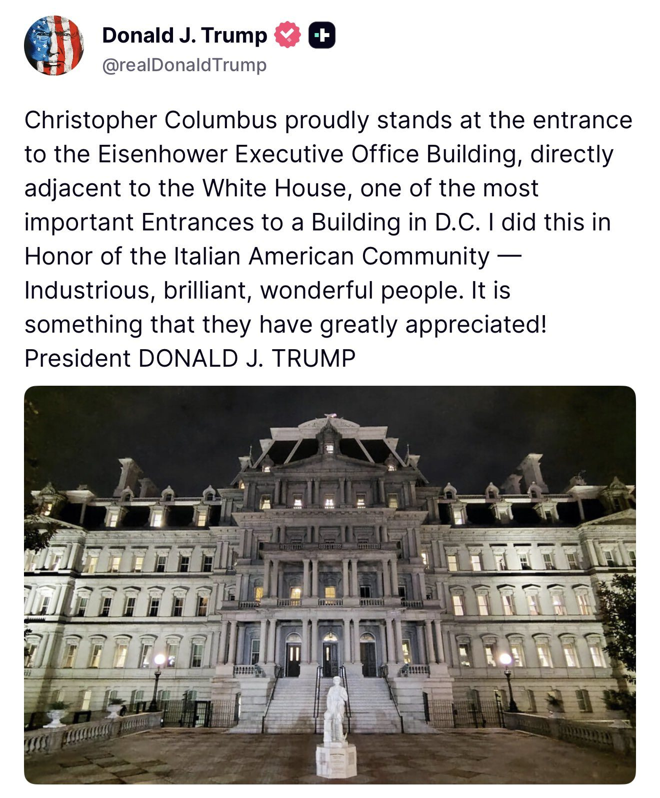

The Financial Times reports that US divers, robotic boats, and underwater craft spent four months covertly clearing mines from the Strait of Hormuz. - Divers operated from inflatable-hulled boats, supported by robotic surface craft and submersibles. Towed sonar arrays produced high-resolution images of seabed objects to help locate suspected mines. - After detection, a diver would typically approach the mine, attach an explosive charge and destroy it. Experts said remotely operated underwater vehicles could also place or deliver explosives. - FT identifies the Common Uncrewed Surface Vessel as an example of the detection platforms. Experts suggested SeaFox or Archerfish systems could have been used for neutralization, and that the USS Miguel Keith, an expeditionary mobile base, may have supported operations.
🚨 TRUMP: “Whoever wins AI, wins.”
“This is bigger than the internet. This is a revolution.”
President Trump goes ALL IN on American innovation, saying the U.S. must beat China in AI as the technology is already driving breakthroughs that are transforming fields like medicine.

BREAKING: President Trump says Bombardier will no longer be able to sell in the United States.
"Buy American. Fly on American airliners," President Trump says.
I will defend my PhD thesis, “Physics-Constrained Generative Models for Computational Design,” on Tuesday, September 8, 2026, at PM ET.
Location: MIT @MIT_CSAIL 32-G449 Zoom: https://t.co/wzQZElMjqK
Committee: Kaiming He, Bill Freeman, Wojciech Matusik
Generative models can now propose candidate designs at high throughput, yet the physical world remains the ultimate judge: a candidate becomes a solution only if it can be realized in the real world and satisfies the functional requirements of the design problem. (1/7)
.@SecScottBessent: “For the first time ever, we brought private companies to the G20. We showcased our great companies, and we want to make sure these global bureaucrats understand that national wealth is created by private enterprise."
139 people are illegally using a commercial business as their main residence for voting purposes in Fulton County
Life is so good in America, it’s freed up way too much time and brainpower to invent fake problems & get far too creative with these nihilistic academic exercises these wackos do. It’s time to pull all tax dollars out of the university system. It’s become a K-hole for woke BS
SBI、Canton Networkで日韓決済網を構築へ──韓Nodeinfra社と提携
SBI、インドネシア証券大手に約430億円出資──東南アジアの暗号資産市場開拓へ
フィンテック4社実証 ステーブルコインなど、大阪府が選定
JUST IN: Russia says they're open to a 3-way meeting between Trump, Putin, and Xi Jinping